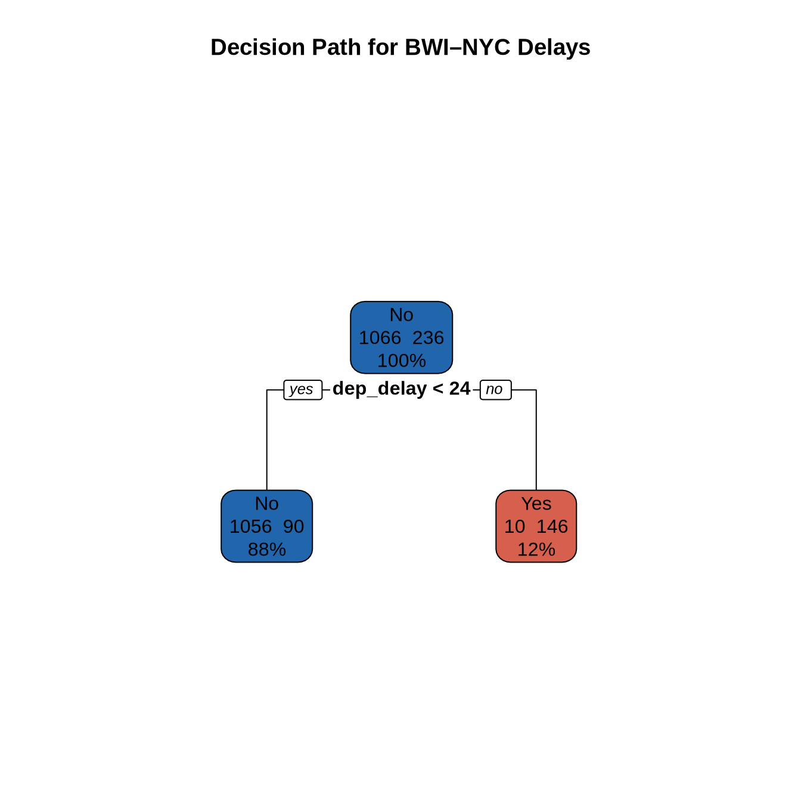
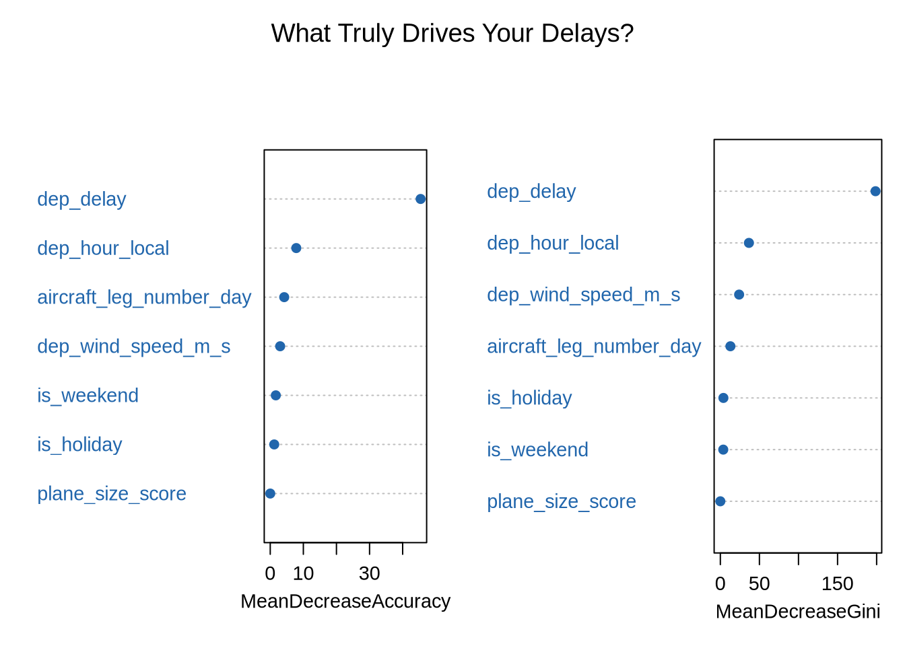
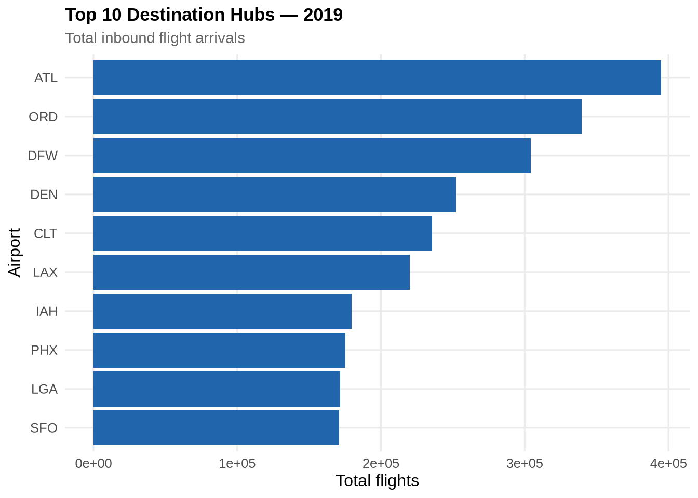
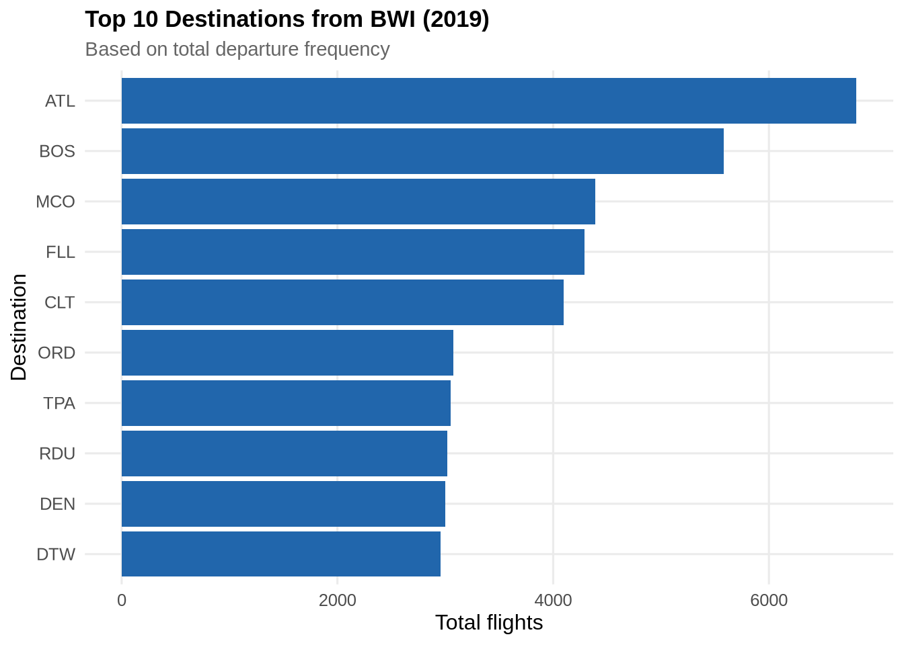
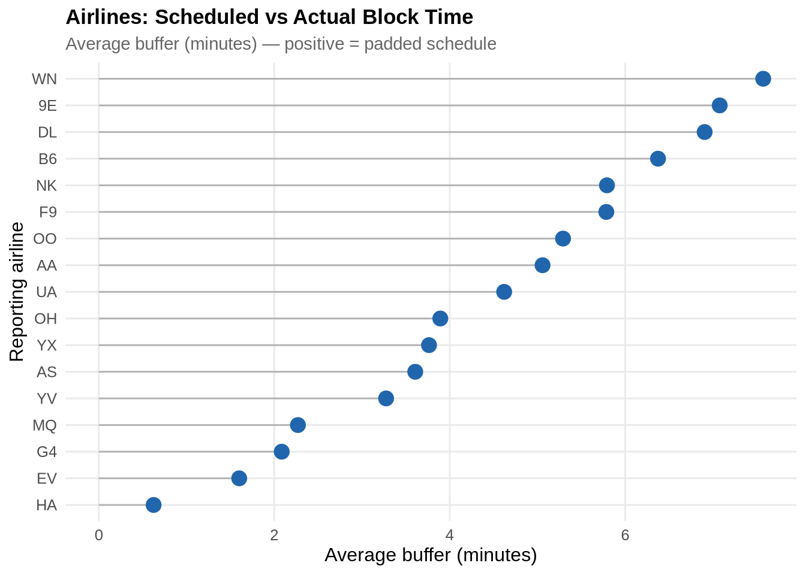
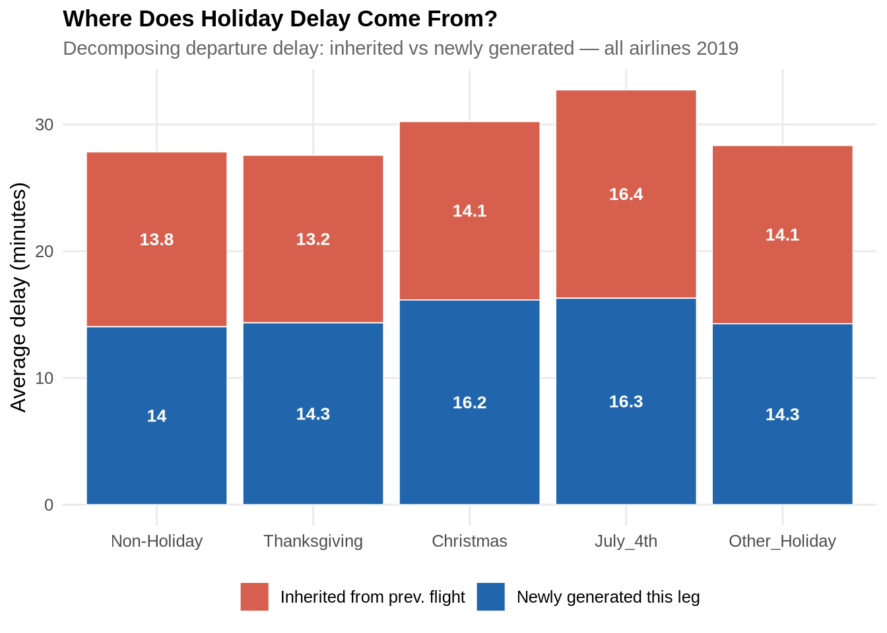
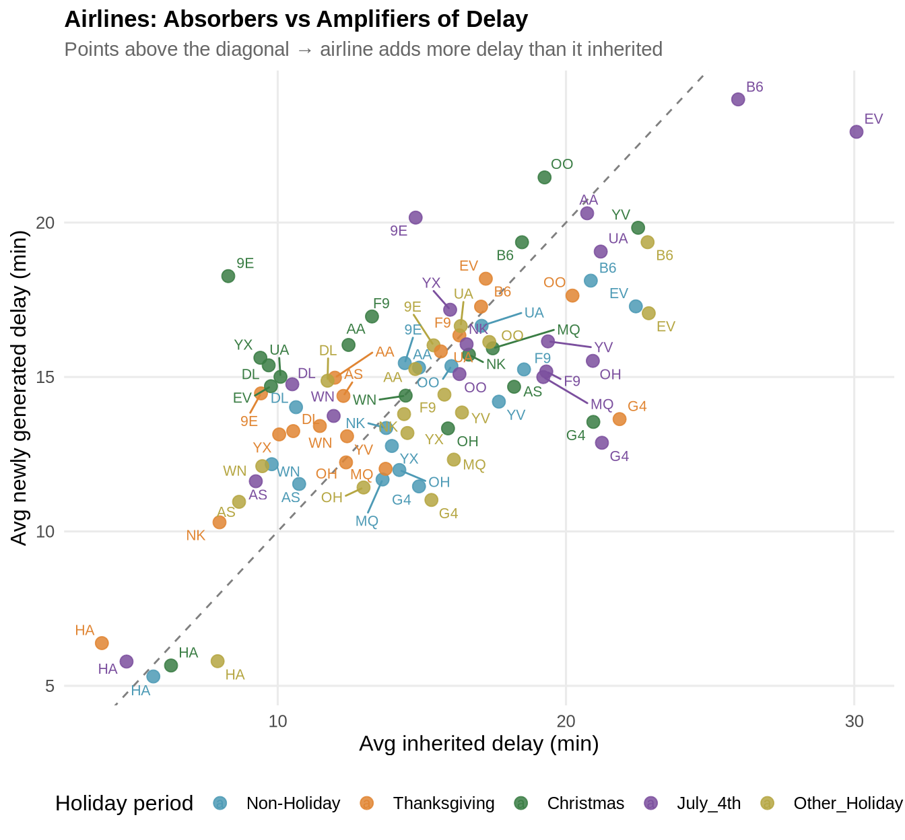

source("shared-notebooks/common_utils/r/utils.r") # common utils
load_project_packages()
set.seed(42)BWI–NY Market Pair
Overview
This modeling and analysis focuses on a specific market pair between BWI and the New York area to provide a more detailed, localized view of flight delay behavior. By narrowing the scope, we can more closely examine the factors that influence delays within a constrained and highly trafficked corridor.
This setting allows for deeper exploration of temporal patterns, weather effects, and aircraft rotation dynamics without the added complexity of the full national network. It also provides a controlled environment to test feature engineering approaches and modeling techniques.
The insights gained from this focused analysis serve as a foundation for understanding delay behavior, which can then be extended and generalized to the broader U.S. domestic network. See the page on U.S. Domestic Network Modeling for more details.
Setups
The setup below loads all required packages via load_project_packages(), defined in utils.r, which installs any missing packages and attaches them to the session. Flight data is loaded from the project’s data source and cached locally as a parquet file at data/flights_raw.parquet on first run — subsequent renders skip the 30-40 second load and read directly from the local cache instead. To refresh the data, delete data/flights_raw.parquet and re-render. flights_raw is returned as an Arrow lazy frame, meaning no data is held in memory until explicitly collected downstream.
if (!file.exists("data/flights_raw.parquet")) {
message("No cache found, loading and writing parquet...")
load_flight_data() %>%
collect() %>%
janitor::clean_names() %>%
arrow::write_parquet("data/flights_raw.parquet")
message("Cache written to data/flights_raw.parquet")
}
flights_raw <- arrow::open_dataset("data/flights_raw.parquet")BWI-NY Modeling & Analysis
Holiday Analysis
# Define 2019 Federal Holidays
us_holidays_2019 <- as.Date(c(
"2019-01-01", "2019-01-21", "2019-02-18", "2019-05-27",
"2019-07-04", "2019-09-02", "2019-10-14", "2019-11-11",
"2019-11-28", "2019-12-25"
))
# Generate travel windows (+/- 3 days around each holiday)
holiday_windows <- map(us_holidays_2019, ~ seq(.x - 3, .x + 3, by = "day")) %>%
flatten_dbl() %>%
as.Date(origin = "1970-01-01")
df_final <- flights_raw %>%
filter(origin == "BWI",
dest %in% c("JFK", "EWR"),
!is.na(dep_delay),
!is.na(flight_date),
!is.na(origin),
!is.na(dest)) %>%
select(
flight_date, arr_delay, dep_delay, carrier_delay, weather_delay,
dep_hour_local, day_of_week, month,
dep_temp_c, dep_wind_speed_m_s, dep_ceiling_height_m,
reporting_airline, taxi_out,
prev_arr_delay, turnaround_minutes, aircraft_leg_number_day,
crs_elapsed_time, actual_elapsed_time, distance
) %>%
collect() %>% # collect before any mutates
mutate(
across(c(prev_arr_delay, weather_delay, carrier_delay), ~replace_na(., 0)),
flight_date_clean = as.Date(as.character(flight_date), format = "%Y-%m-%d")
) %>%
filter(!is.na(arr_delay), !is.na(dep_delay)) %>%
mutate(
is_delayed = as.factor(ifelse(arr_delay >= 15, "Yes", "No")),
is_weekend = as.factor(ifelse(day_of_week %in% c(6, 7), "Yes", "No")),
is_rush_hour = as.factor(ifelse(dep_hour_local %in% c(7, 8, 16, 17, 18), "Yes", "No")),
reporting_airline = as.factor(reporting_airline),
buffer = crs_elapsed_time - actual_elapsed_time,
is_holiday = as.factor(ifelse(as.Date(flight_date_clean) %in% holiday_windows, "Holiday", "Non-Holiday")),
plane_size_score = case_when(
distance > 1500 ~ "Large",
distance > 500 ~ "Medium",
TRUE ~ "Small"
)
)
# Output Holiday Frequency Table
holiday_freq <- as.data.frame(table(df_final$is_holiday))
names(holiday_freq) <- c("Holiday Status", "Count")
holiday_freq %>%
knitr::kable(caption = "Flight Count by Holiday Status") %>%
kable_styling(
bootstrap_options = c("striped", "hover", "condensed"),
full_width = FALSE,
position = "left"
)| Holiday Status | Count |
|---|---|
| Holiday | 290 |
| Non-Holiday | 1497 |
Delays by Holiday Status
Arrival delays are compared inside and outside a ±3-day window around every 2019 US public holiday. Outliers above 100 minutes are clipped to focus on the central distribution. The boxplot below reveals that holiday periods produce a heavier right tail of delays, not merely a higher median — a small share of flights incur very large delays during peak travel windows.
ggplot(df_final, aes(x = is_holiday, y = arr_delay, fill = is_holiday)) +
geom_boxplot(outlier.shape = NA, width = 0.5, colour = "grey30") +
coord_cartesian(ylim = c(-20, 100)) +
scale_fill_manual(values = c("Holiday" = pal_2[2],
"Non-Holiday" = pal_2[1])) +
labs(
title = "The Holiday Tax: BWI–NYC Arrival Delays",
subtitle = "±3-day windows around all 2019 US public holidays",
x = NULL,
y = "Arrival delay (minutes)"
) +
theme_paper +
theme(legend.position = "none")
Principal Component Analysis
Before fitting non-linear models, 11 numeric predictors are standardised (zero mean, unit variance) and reduced via PCA. Standardisation is essential because the inputs span different units and scales — mixing minutes, degrees Celsius, and metres per second without rescaling would give disproportionate weight to high-magnitude variables such as distance.
| Variable | Description |
|---|---|
dep_delay |
Departure delay (minutes) |
dep_hour_local |
Scheduled departure hour (local time) |
dep_wind_speed_m_s |
Surface wind speed at origin (m/s) |
dep_temp_c |
Temperature at origin (°C) |
dep_ceiling_height_m |
Cloud ceiling at origin (m) |
prev_arr_delay |
Arrival delay of the same aircraft’s prior leg |
turnaround_minutes |
Ground time between inbound arrival and outbound departure |
aircraft_leg_number_day |
Leg sequence number for the aircraft that day |
buffer |
Scheduled elapsed time minus actual elapsed time |
distance |
Great-circle route distance (km) |
taxi_out |
Taxi-out time at origin (minutes) |
The scree plot below guides the choice to retain the first five components for modelling, which together capture the majority of variance while discarding noise dimensions.
df_pca_input <- df_final %>%
select(dep_delay, dep_hour_local, dep_wind_speed_m_s, dep_temp_c,
dep_ceiling_height_m, prev_arr_delay, turnaround_minutes,
aircraft_leg_number_day, buffer, distance, taxi_out) %>%
drop_na() %>%
scale() %>%
as.data.frame()
pca_result <- FactoMineR::PCA(df_pca_input, graph = FALSE)
factoextra::fviz_eig(pca_result, addlabels = TRUE,
barfill = pal_2[1], barcolor = "white") +
labs(title = "PCA Scree Plot — Variance Explained per Component",
y = "Variance explained (%)") +
theme_paper
pca_scores <- as.data.frame(pca_result$ind$coord[, 1:5])
df_pca_model <- bind_cols(
is_delayed = df_final$is_delayed[1:nrow(pca_scores)],
pca_scores
)
Tree-Based Modelling
Two tree-based classifiers are trained on the original feature space using a 75/25 stratified train–test split. The target variable is_delayed is a binary indicator for arrivals delayed by 15 or more minutes.
set.seed(42)
df_model <- df_final %>%
select(is_delayed, dep_delay, dep_hour_local, dep_wind_speed_m_s,
aircraft_leg_number_day, plane_size_score,
is_holiday, is_weekend) %>%
drop_na()
train_idx <- createDataPartition(df_model$is_delayed, p = 0.75, list = FALSE)
train_set <- df_model[ train_idx, ]
test_set <- df_model[-train_idx, ]Decision tree
The single decision tree provides an interpretable decision path. Each leaf node shows the predicted class and the share of training observations reaching that node.
tree_fit <- rpart(is_delayed ~ ., data = train_set, method = "class")
rpart.plot(tree_fit, extra = 101,
main = "Decision Path for BWI–NYC Delays",
box.palette = c(pal_2[1], pal_2[2]))
Random forest
The random forest aggregates 100 trees and provides a more robust variable importance estimate. MeanDecreaseGini measures how much each predictor reduces node impurity across all splits, averaged over the ensemble.
rf_fit <- randomForest(is_delayed ~ ., data = train_set,
ntree = 100, importance = TRUE)
varImpPlot(rf_fit,
main = "What Truly Drives Your Delays?",
col = pal_2[1], pch = 19, cex = 0.9)
Non-Linear Modelling with PCA Features
Two non-linear classifiers are trained on the five PCA components derived above. Reducing inputs to orthogonal components removes multicollinearity and improves the stability of both SVM and neural network fits.
- SVM (RBF kernel): Maps PCA scores into a higher-dimensional space and finds a maximum-margin hyperplane. Cost parameter
C = 1balances margin width against training misclassification. - Neural network (5 hidden neurons): Single-hidden-layer network with L2 weight decay (
decay = 0.01) to limit overfitting on the low-dimensional PCA input.
set.seed(42)
pca_idx <- createDataPartition(df_pca_model$is_delayed, p = 0.75, list = FALSE)
train_pca <- df_pca_model[ pca_idx, ]
test_pca <- df_pca_model[-pca_idx, ]
svm_fit <- kernlab::ksvm(is_delayed ~ ., data = train_pca,
kernel = "rbfdot", C = 1)
svm_preds <- predict(svm_fit, test_pca)
nnet_fit <- nnet::nnet(is_delayed ~ ., data = train_pca,
size = 5, decay = 0.01, trace = FALSE)
nnet_preds <- as.factor(predict(nnet_fit, test_pca, type = "class"))
svm_acc <- confusionMatrix(svm_preds, test_pca$is_delayed)$overall["Accuracy"]
nnet_acc <- confusionMatrix(nnet_preds, test_pca$is_delayed)$overall["Accuracy"]
tibble(
Model = c("SVM (RBF kernel)", "Neural network (5 hidden neurons)"),
Accuracy = round(c(svm_acc, nnet_acc), 4)
) %>%
kable(align = c("l", "r")) %>%
kable_styling(bootstrap_options = c("striped", "hover"), full_width = FALSE)| Model | Accuracy |
|---|---|
| SVM (RBF kernel) | 0.8233 |
| Neural network (5 hidden neurons) | 0.8163 |
Holiday Category Tree Model
Holiday status is refined from a binary flag into five named categories to give tree-based models finer-grained temporal context.
df_final <- df_final %>%
mutate(
is_holiday = factor(case_when(
flight_date_clean >= (as.Date("2019-11-28") - 3) &
flight_date_clean <= (as.Date("2019-11-28") + 3) ~ "Thanksgiving",
flight_date_clean >= (as.Date("2019-12-25") - 3) &
flight_date_clean <= (as.Date("2019-12-25") + 3) ~ "Christmas",
flight_date_clean >= (as.Date("2019-07-04") - 3) &
flight_date_clean <= (as.Date("2019-07-04") + 3) ~ "July_4th",
flight_date_clean %in% holiday_windows ~ "Other_Holiday",
.default = "Non-Holiday"
), levels = c("Non-Holiday", "Thanksgiving", "Christmas",
"July_4th", "Other_Holiday"))
)
table(df_final$is_holiday) %>%
as.data.frame() %>%
rename(`Holiday period` = Var1, `Flight count` = Freq) %>%
arrange(desc(`Flight count`)) %>%
kable() %>%
kable_styling(bootstrap_options = c("striped", "hover"), full_width = FALSE)| Holiday period | Flight count |
|---|---|
| Non-Holiday | 1497 |
| Other_Holiday | 214 |
| Thanksgiving | 30 |
| July_4th | 25 |
| Christmas | 21 |
Hub and Airline Analysis
This section examines scheduling behaviour across the full 2019 dataset, exploring how airlines build buffer time into published block hours and whether that strategy differs between weekdays and weekends.
Top destination hubs
hub_counts <- flights_raw %>%
select(dest, reporting_airline, taxi_in) %>%
collect() %>%
group_by(dest) %>%
summarise(
total_flights = n(),
unique_airlines = n_distinct(reporting_airline),
avg_taxi_in = mean(taxi_in, na.rm = TRUE),
.groups = "drop"
) %>%
arrange(desc(total_flights))
hub_counts %>%
head(10) %>%
kable(col.names = c("Destination", "Total flights",
"Unique airlines", "Avg taxi-in (min)"),
digits = 1) %>%
kable_styling(bootstrap_options = c("striped", "hover"), full_width = FALSE)| Destination | Total flights | Unique airlines | Avg taxi-in (min) |
|---|---|---|---|
| ATL | 395026 | 15 | 8.9 |
| ORD | 339569 | 13 | 14.1 |
| DFW | 304346 | 14 | 11.8 |
| DEN | 252064 | 12 | 9.1 |
| CLT | 235490 | 14 | 12.5 |
| LAX | 219996 | 11 | 11.0 |
| IAH | 179682 | 14 | 8.8 |
| PHX | 175343 | 11 | 7.5 |
| LGA | 171665 | 14 | 9.0 |
| SFO | 170966 | 9 | 8.6 |
ggplot(head(hub_counts, 10),
aes(x = reorder(dest, total_flights), y = total_flights)) +
geom_col(fill = pal_2[1]) +
coord_flip() +
labs(title = "Top 10 Destination Hubs — 2019",
subtitle = "Total inbound flight arrivals",
x = "Airport", y = "Total flights") +
theme_paper
Top destinations from BWI
hub_data <- flights_raw %>%
filter(origin == "BWI") %>%
select(dest) %>%
collect() %>%
count(dest, sort = TRUE) %>%
slice_max(n, n = 10)
ggplot(hub_data, aes(x = reorder(dest, n), y = n)) +
geom_col(fill = pal_2[1]) +
coord_flip() +
labs(title = "Top 10 Destinations from BWI (2019)",
subtitle = "Based on total departure frequency",
x = "Destination", y = "Total flights") +
theme_paper
Airline scheduling honesty
The scheduling buffer — the difference between published block time (crs_elapsed_time) and actual flight time (actual_elapsed_time) — measures how much padding carriers build into their schedules. A large buffer can absorb operational variability but may also mask chronic performance problems.
honesty_check <- df_final %>%
mutate(buffer = crs_elapsed_time - actual_elapsed_time) %>%
group_by(reporting_airline) %>%
summarise(
avg_padding_mins = mean(buffer, na.rm = TRUE),
avg_arrival_delay = mean(arr_delay, na.rm = TRUE),
flight_count = n()
) %>%
arrange(desc(avg_padding_mins))
honesty_check %>%
kable(col.names = c("Airline", "Avg padding (min)",
"Avg arrival delay (min)", "Flights"),
digits = 2) %>%
kable_styling(bootstrap_options = c("striped", "hover"), full_width = FALSE)| Airline | Avg padding (min) | Avg arrival delay (min) | Flights |
|---|---|---|---|
| 9E | 6.49 | 2.70 | 1363 |
| WN | 5.24 | 22.97 | 59 |
| MQ | 4.46 | -0.21 | 365 |
all_airline_buffers <- flights_raw %>%
filter(!is.na(crs_elapsed_time), !is.na(actual_elapsed_time)) %>%
select(reporting_airline, crs_elapsed_time, actual_elapsed_time, arr_delay) %>%
collect() %>%
mutate(buffer_mins = crs_elapsed_time - actual_elapsed_time) %>%
group_by(reporting_airline) %>%
summarise(
avg_buffer_mins = mean(buffer_mins, na.rm = TRUE),
median_buffer = median(buffer_mins, na.rm = TRUE),
flight_count = n(),
on_time_arrival_rate = mean(arr_delay <= 0, na.rm = TRUE) * 100
) %>%
filter(flight_count > 100) %>%
arrange(desc(avg_buffer_mins))
ggplot(all_airline_buffers,
aes(x = reorder(reporting_airline, avg_buffer_mins),
y = avg_buffer_mins)) +
geom_segment(aes(xend = reporting_airline, yend = 0), colour = "grey70") +
geom_point(size = 4, colour = pal_2[1]) +
coord_flip() +
labs(title = "Airlines: Scheduled vs Actual Block Time",
subtitle = "Average buffer (minutes) — positive = padded schedule",
x = "Reporting airline", y = "Average buffer (minutes)") +
theme_paper
Weekday vs weekend scheduling strategy
weekend_comparison <- df_final %>%
mutate(
buffer_mins = crs_elapsed_time - actual_elapsed_time,
day_type = ifelse(day_of_week %in% c(6, 7), "Weekend", "Weekday")
) %>%
group_by(reporting_airline, day_type) %>%
summarise(
avg_buffer = mean(buffer_mins, na.rm = TRUE),
avg_arr_delay = mean(arr_delay, na.rm = TRUE),
flight_count = n(),
.groups = "drop"
)
ggplot(weekend_comparison,
aes(x = reporting_airline, y = avg_buffer, fill = day_type)) +
geom_col(position = "dodge", colour = "white") +
scale_fill_manual(values = c("Weekday" = pal_2[1], "Weekend" = pal_2[2])) +
labs(title = "Scheduling Strategy: Weekdays vs Weekends",
subtitle = "Average buffer (minutes) by reporting carrier",
x = "Airline", y = "Avg buffer (minutes)", fill = NULL) +
theme_paper
Holiday Impact and Delay Propagation
The analysis is expanded to the full flights_raw dataset (all routes, all airlines) with named holiday categories, providing a nationally representative picture of how each holiday window affects delay rates and where that delay originates.
flights_holiday <- flights_raw %>%
filter(!is.na(arr_delay), !is.na(dep_delay)) %>%
collect() %>%
mutate(
flight_date_clean = as.Date(flight_date),
is_holiday = factor(case_when(
flight_date_clean >= (as.Date("2019-11-28") - 3) &
flight_date_clean <= (as.Date("2019-11-28") + 3) ~ "Thanksgiving",
flight_date_clean >= (as.Date("2019-12-25") - 3) &
flight_date_clean <= (as.Date("2019-12-25") + 3) ~ "Christmas",
flight_date_clean >= (as.Date("2019-07-04") - 3) &
flight_date_clean <= (as.Date("2019-07-04") + 3) ~ "July_4th",
flight_date_clean %in% holiday_windows ~ "Other_Holiday",
.default = "Non-Holiday"
), levels = c("Non-Holiday", "Thanksgiving", "Christmas",
"July_4th", "Other_Holiday"))
)Delay summary by airline and holiday
holiday_airline_summary <- flights_holiday %>%
group_by(reporting_airline, is_holiday) %>%
summarise(
avg_arr_delay = mean(arr_delay, na.rm = TRUE),
avg_dep_delay = mean(dep_delay, na.rm = TRUE),
pct_delayed = mean(arr_delay >= 15, na.rm = TRUE) * 100,
flight_count = n(),
.groups = "drop"
)
holiday_airline_summary %>%
kable(digits = 2,
col.names = c("Airline", "Holiday period", "Avg arr delay (min)",
"Avg dep delay (min)", "% Delayed ≥15 min", "Flights")) %>%
kable_styling(bootstrap_options = c("striped", "hover", "condensed")) %>%
column_spec(5, bold = TRUE)| Airline | Holiday period | Avg arr delay (min) | Avg dep delay (min) | % Delayed ≥15 min | Flights |
|---|---|---|---|---|---|
| 9E | Non-Holiday | 3.04 | 10.07 | 17.29 | 213815 |
| 9E | Thanksgiving | -1.31 | 6.31 | 14.77 | 4481 |
| 9E | Christmas | -6.64 | 5.66 | 10.81 | 5015 |
| 9E | July_4th | 3.78 | 11.84 | 14.82 | 3704 |
| 9E | Other_Holiday | 4.92 | 11.27 | 18.37 | 30117 |
| AA | Non-Holiday | 6.80 | 11.82 | 20.58 | 777018 |
| AA | Thanksgiving | 4.33 | 9.18 | 19.38 | 17159 |
| AA | Christmas | 3.29 | 10.60 | 19.15 | 17504 |
| AA | July_4th | 12.75 | 18.09 | 24.77 | 16899 |
| AA | Other_Holiday | 6.79 | 11.85 | 20.60 | 118196 |
| AS | Non-Holiday | 1.57 | 5.10 | 18.49 | 216795 |
| AS | Thanksgiving | 3.32 | 7.69 | 21.27 | 5008 |
| AS | Christmas | 9.00 | 13.90 | 27.20 | 5117 |
| AS | July_4th | -0.79 | 3.50 | 14.95 | 5510 |
| AS | Other_Holiday | -1.45 | 2.61 | 15.44 | 32386 |
| B6 | Non-Holiday | 10.54 | 17.12 | 24.84 | 242951 |
| B6 | Thanksgiving | 9.57 | 13.96 | 24.39 | 5929 |
| B6 | Christmas | 5.56 | 14.84 | 19.67 | 5703 |
| B6 | July_4th | 16.00 | 23.64 | 26.32 | 5596 |
| B6 | Other_Holiday | 14.69 | 20.26 | 26.15 | 37232 |
| DL | Non-Holiday | 1.02 | 7.99 | 14.28 | 823562 |
| DL | Thanksgiving | 2.88 | 8.07 | 17.06 | 17495 |
| DL | Christmas | -0.48 | 8.83 | 16.12 | 16648 |
| DL | July_4th | 1.79 | 7.91 | 13.71 | 17276 |
| DL | Other_Holiday | 2.20 | 9.12 | 14.84 | 117005 |
| EV | Non-Holiday | 14.90 | 16.51 | 24.63 | 110361 |
| EV | Thanksgiving | 9.88 | 13.04 | 19.74 | 2665 |
| EV | Christmas | -2.84 | 4.90 | 11.84 | 2315 |
| EV | July_4th | 22.83 | 23.81 | 27.28 | 2203 |
| EV | Other_Holiday | 15.97 | 17.20 | 26.03 | 17139 |
| F9 | Non-Holiday | 9.11 | 14.83 | 25.46 | 110374 |
| F9 | Thanksgiving | 6.69 | 12.03 | 22.53 | 2819 |
| F9 | Christmas | 2.35 | 11.38 | 22.61 | 2840 |
| F9 | July_4th | 11.19 | 15.61 | 26.97 | 2788 |
| F9 | Other_Holiday | 5.86 | 11.83 | 22.66 | 16722 |
| G4 | Non-Holiday | 7.33 | 9.56 | 19.66 | 85777 |
| G4 | Thanksgiving | 17.00 | 16.92 | 29.22 | 2365 |
| G4 | Christmas | 13.42 | 15.23 | 26.82 | 2509 |
| G4 | July_4th | 13.93 | 15.99 | 27.02 | 2694 |
| G4 | Other_Holiday | 8.06 | 9.92 | 21.61 | 11960 |
| HA | Non-Holiday | 0.41 | 0.99 | 11.11 | 68453 |
| HA | Thanksgiving | -3.49 | -1.13 | 7.71 | 1635 |
| HA | Christmas | 1.76 | 2.71 | 11.88 | 1666 |
| HA | July_4th | -0.33 | 0.94 | 9.20 | 1631 |
| HA | Other_Holiday | 2.78 | 3.50 | 14.23 | 10506 |
| MQ | Non-Holiday | 6.08 | 8.43 | 19.63 | 269440 |
| MQ | Thanksgiving | 8.07 | 9.21 | 23.36 | 5647 |
| MQ | Christmas | 8.63 | 15.05 | 21.55 | 6032 |
| MQ | July_4th | 11.69 | 14.39 | 24.57 | 5837 |
| MQ | Other_Holiday | 9.02 | 10.82 | 22.23 | 40051 |
| NK | Non-Holiday | 4.84 | 10.61 | 18.58 | 166784 |
| NK | Thanksgiving | -1.03 | 4.42 | 14.82 | 4259 |
| NK | Christmas | 7.85 | 15.46 | 22.20 | 4234 |
| NK | July_4th | 8.15 | 14.34 | 21.24 | 4260 |
| NK | Other_Holiday | 6.09 | 11.42 | 17.90 | 25308 |
| OH | Non-Holiday | 6.55 | 10.44 | 19.14 | 237613 |
| OH | Thanksgiving | 4.78 | 8.73 | 18.97 | 5223 |
| OH | Christmas | 8.39 | 12.99 | 21.26 | 5316 |
| OH | July_4th | 14.02 | 17.08 | 23.98 | 5358 |
| OH | Other_Holiday | 5.24 | 9.55 | 19.09 | 35794 |
| OO | Non-Holiday | 6.73 | 11.96 | 18.12 | 689786 |
| OO | Thanksgiving | 13.36 | 17.45 | 23.51 | 14829 |
| OO | Christmas | 8.55 | 18.55 | 20.35 | 15768 |
| OO | July_4th | 6.47 | 10.70 | 17.80 | 14858 |
| OO | Other_Holiday | 7.78 | 13.22 | 18.57 | 101204 |
| UA | Non-Holiday | 8.39 | 13.05 | 21.32 | 513934 |
| UA | Thanksgiving | 9.22 | 12.36 | 23.41 | 11605 |
| UA | Christmas | 0.61 | 8.16 | 16.65 | 11487 |
| UA | July_4th | 12.06 | 16.64 | 24.63 | 12123 |
| UA | Other_Holiday | 7.26 | 12.11 | 19.48 | 76761 |
| WN | Non-Holiday | 2.38 | 9.77 | 16.85 | 1120396 |
| WN | Thanksgiving | 5.04 | 12.42 | 21.27 | 24525 |
| WN | Christmas | 8.57 | 16.86 | 25.83 | 25585 |
| WN | July_4th | 4.61 | 11.67 | 18.72 | 25735 |
| WN | Other_Holiday | 1.75 | 9.32 | 16.47 | 167705 |
| YV | Non-Holiday | 10.28 | 13.50 | 20.49 | 187292 |
| YV | Thanksgiving | 4.91 | 8.64 | 16.92 | 4090 |
| YV | Christmas | 13.89 | 20.24 | 22.45 | 4044 |
| YV | July_4th | 12.57 | 15.92 | 22.08 | 4203 |
| YV | Other_Holiday | 9.00 | 12.18 | 20.49 | 28259 |
| YX | Non-Holiday | 4.62 | 8.33 | 18.86 | 271738 |
| YX | Thanksgiving | 0.62 | 5.63 | 15.31 | 5808 |
| YX | Christmas | -3.38 | 5.75 | 12.14 | 5998 |
| YX | July_4th | 5.87 | 10.28 | 17.13 | 5453 |
| YX | Other_Holiday | 5.66 | 9.03 | 19.66 | 40152 |
Delay heatmap: airline × holiday
ggplot(holiday_airline_summary,
aes(x = is_holiday, y = reporting_airline, fill = avg_arr_delay)) +
geom_tile(colour = "white", linewidth = 0.4) +
geom_text(aes(label = round(avg_arr_delay, 1)),
size = 3, colour = "white", fontface = "bold") +
scale_fill_gradient2(low = pal_2[1], mid = "#f7f7f7", high = pal_2[2],
midpoint = 0, name = "Avg delay\n(min)") +
labs(title = "Holiday Delay Heatmap — Airline × Holiday Period",
subtitle = "Average arrival delay (min); red = worse, blue = better",
x = "Holiday period", y = "Airline") +
theme_paper +
theme(axis.text.x = element_text(angle = 25, hjust = 1))
Decomposing delay: inherited vs newly generated
A key analytical distinction is whether a flight’s departure delay was inherited from the previous leg flown by the same aircraft — propagated via tail number through prev_arr_delay — or freshly generated on the current leg. Understanding this split is important for the predictive model: inherited delay is knowable before departure and is captured by prev_arr_late_15 and rotation_continuity_flag, whereas newly generated delay must be modelled from operational and weather conditions.
propagation_df <- flights_holiday %>%
filter(!is.na(prev_arr_delay)) %>%
mutate(
inherited_delay = pmax(prev_arr_delay, 0),
new_delay = pmax(dep_delay - prev_arr_delay, 0),
total_dep_delay = inherited_delay + new_delay
)
propagation_summary <- propagation_df %>%
group_by(is_holiday) %>%
summarise(
avg_inherited = mean(inherited_delay, na.rm = TRUE),
avg_new = mean(new_delay, na.rm = TRUE),
avg_total = mean(total_dep_delay, na.rm = TRUE),
pct_inherited = avg_inherited / avg_total * 100,
flight_count = n(),
.groups = "drop"
)propagation_summary %>%
kable(digits = 2,
col.names = c("Holiday period", "Avg inherited (min)",
"Avg new delay (min)", "Avg total dep delay (min)",
"% Inherited", "Flights")) %>%
kable_styling(bootstrap_options = c("striped", "hover")) %>%
column_spec(5, bold = TRUE, color = "white",
background = spec_color(propagation_summary$pct_inherited,
option = "C", direction = -1))| Holiday period | Avg inherited (min) | Avg new delay (min) | Avg total dep delay (min) | % Inherited | Flights |
|---|---|---|---|---|---|
| Non-Holiday | 13.80 | 14.04 | 27.84 | 49.57 | 6102339 |
| Thanksgiving | 13.23 | 14.35 | 27.57 | 47.96 | 135491 |
| Christmas | 14.07 | 16.16 | 30.23 | 46.56 | 137727 |
| July_4th | 16.44 | 16.29 | 32.73 | 50.23 | 136053 |
| Other_Holiday | 14.06 | 14.28 | 28.34 | 49.63 | 904535 |
propagation_summary %>%
select(is_holiday, avg_inherited, avg_new) %>%
pivot_longer(cols = c(avg_inherited, avg_new),
names_to = "delay_type",
values_to = "minutes") %>%
mutate(delay_type = case_match(delay_type,
"avg_inherited" ~ "Inherited from prev. flight",
"avg_new" ~ "Newly generated this leg"
)) %>%
ggplot(aes(x = is_holiday, y = minutes, fill = delay_type)) +
geom_col(position = "stack", colour = "white", linewidth = 0.3) +
geom_text(aes(label = round(minutes, 1)),
position = position_stack(vjust = 0.5),
colour = "white", fontface = "bold", size = 3.5) +
scale_fill_manual(values = c(
"Inherited from prev. flight" = pal_2[2],
"Newly generated this leg" = pal_2[1]
)) +
labs(title = "Where Does Holiday Delay Come From?",
subtitle = "Decomposing departure delay: inherited vs newly generated — all airlines 2019",
x = NULL, y = "Average delay (minutes)", fill = NULL) +
theme_paper
Airlines as absorbers vs amplifiers of delay
Each airline–holiday combination is classified by whether the carrier absorbs inherited disruption (points below the diagonal: newly generated delay < inherited delay) or amplifies it (points above: newly generated delay > inherited delay).
propagation_df %>%
group_by(reporting_airline, is_holiday) %>%
summarise(
avg_inherited = mean(inherited_delay, na.rm = TRUE),
avg_new = mean(new_delay, na.rm = TRUE),
.groups = "drop"
) %>%
ggplot(aes(x = avg_inherited, y = avg_new,
colour = is_holiday, label = reporting_airline)) +
geom_abline(slope = 1, intercept = 0,
linetype = "dashed", colour = "grey50") +
geom_point(size = 3, alpha = 0.85) +
geom_text_repel(size = 2.8, max.overlaps = 15) +
scale_colour_manual(values = pal_hol) +
labs(title = "Airlines: Absorbers vs Amplifiers of Delay",
subtitle = "Points above the diagonal → airline adds more delay than it inherited",
x = "Avg inherited delay (min)",
y = "Avg newly generated delay (min)",
colour = "Holiday period") +
theme_paper
For more details see: github.com/zyrirena/Project